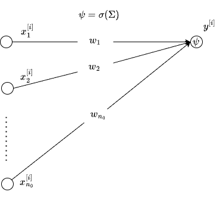
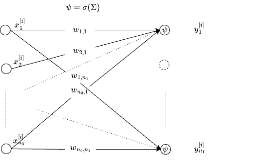
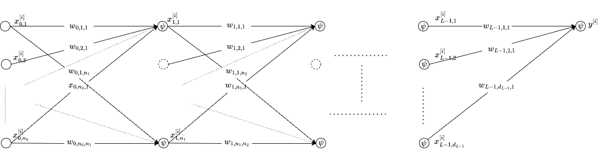

FFNs
Materials:
Date: Saturday, 07-Sep-2024, 1.30pm, IST.
Pre-work:
- Refresh ML foundations.
- Read “The 100 page ML book” by Andiry Burkov. Chapters accessible here
In-Class
- History of Deep Learning
- Lecture-1 pdf, Interactive slides [R01]
- Lecture-1 pdf [R02]
- Visualizations
- Interactive Figures to visualize NNs [R05]
- Representational Power of NNs from [R06]
- Neural Networks Motivation
- McCulloch-Pitts Neuron, Perceptron Lecture-2:pdf [R01]
- Digital Logic Modeling by Perceptron Neural Networks:pdf [R03]
- FFNs
Lab
- FFN for Classification on Iris data
- FFN for Regression on Friedman2 data
Post-class:
- Lecture-3:pdf Sigmoid Neuron, Error Surfaces, Representation Power of FFNs [R02]
- Gradient Descent, Word Vectors [R03]
- Lecture-4:pdf FFNs and Backprop [R02]
- Computational Graphs, Backprop:pdf [R03]
- Lecture - Expressivity and UAT
- Neural Networks Review from R07
- Neural Networks: A Review part-1: youtube, part-2: youtube
- FFNs and Backpopr part-1: youtube, part-2: youtube
Papers
- Universal Approximation Theorem original paper by Cybenko pdf
- Multilayer FFNs are universal approximators Hornik, Stinchcombe, and White
- Representation Benefits of Deep FFNs Telagarsky
Notes
Linear Model
Consider the following regression problem \[y^{[i]} \equiv f(x^{[i]}) + e^{[i]} \equiv \phi(x^{[i]}) + e^{[i]}, i \in \left\{1,\dots,N\right\}\] with \(D = \{x^{[i]}, y^{[i]}\}_{i=1}^{N}\) representing all the data available to fit (train) the model \(f(x)\). Suppose that \(x_1, x_2, x_3, \dots, x_{n_0}\) are the \({n_0}\) features available to fit the model. If we choose \(f(.)\) to be a linear combination of the features, it leads us to the familiar Linear Model (or Linear Regression). In matrix notation, the regression problem is: \[ \begin{array}{left} {\bf y} = {\bf X}{\bf \beta} + {\bf \epsilon} \end{array} \] where \[ \begin{array}{left} {\bf X}_{N \times {({n_0}+1)}} &=& \begin{pmatrix} 1 & x_1^{[1]} & \dots & x_{n_0}^{[1]} \\ 1 & x_1^{[2]} & \dots & x_{n_0}^{[2]} \\ \vdots & & & \vdots \\ 1 & x_1^{[N]} & \dots & x_{n_0}^{[N]} \end{pmatrix} \\ {\bf \beta}_{{({n_0}+1)} \times 1} &=& [\beta_1, \beta_2, \dots, \beta_{({n_0}+1)} ]^T \\ {\bf y}_{N \times 1} &=& [y^{[1]}, y^{[2]}, \dots, y^{[N]} ]^T \\ \end{array} \] This is the classic Linear Regression setup. To recast this in a familiar Deep Learning notation, we rewrite the above as: \[ \begin{array}{left} {\bf y} = {\bf X}{\bf w} + {\bf b} + {\bf \epsilon} \end{array} \] where \({\bf b}\) represents the \({n_0} \times 1\) bias (or intercept) term, \({\bf w}\) is the weight matrix (regression coefficients) and \({\bf X}\) is the set of all \(N \times (n_0+1)\) features excluding the column of ones (which was included to model the intercept/ bias term).
The prediction \({\bf \hat{y}}\) is typically the conditional expectation \({\bf \hat{y}| {\bf X} } = {\bf X}{\bf w} + {\bf b}\) under the zero-mean error model for \({\bf \epsilon}\), obtained by minimizing the MSE between the observed and the predicted. This is essentially a Perceptron with linear activation function, which is typically used to solve regression problems. What about binary classification (or more generally, categorical responses)?
Generalized Linear Model
Binary Classification
Suppose \(y \in \{ 0,1\}\) is a binary response, and consider the following (generative) model:
\[ \begin{array}{left} y^{[i]} = I(h^{[i]} \ge 0) \\ h^{[i]} \equiv f(x^{[i]}) + e^{[i]} \end{array} \]
Notice that the output is a thresholded version (via the Indicator function) of the linear model response \(h^{[i]}\). If \(e^{[i]} \sim N(0, \sigma^2)\), then,
\[ \begin{array}{left} P(y^{[i]} = 1) \equiv \pi^{[i]}= \sigma \left( f(x^{[i]}) \right) \equiv \frac{ \exp(f(x^{[i]})}{1+ \exp(f(x^{[i]}))} \end{array} \]
If we choose \(f(x^{[i]}) \equiv {\bf x}{\bf w} + {\bf b}\), where \({\bf x}\) is \(1 \times {n_0}\) vector of inputs, we recover the Perceptron with sigmoid activation, which is exactly the Logistic regression model, belonging to the much larger class of Generalized Linear Models (GLMs). In the place of \(\sigma\), one can choose any CDF. In particular, if we choose the CDF of the standard Normal distribution, we recover the Probit model. This Perceptron (Logistic regression) is the most recognizable building block of MLP, a schematic of which is shown below.

Multiclass Classification
The extension of the logistic regression to multiclass is straightforward but we need a different way of writing the models. The Binary Classification problem can written in the following equivalent fashion: \[ \begin{array}{left} y^{[i]} \sim Bin(\pi^{[i]}, 1)\\ \pi^{[i]} = \sigma \left( f(x^{[i]}) \right) \equiv \frac{ \exp(f(x^{[i]})} {1+ \exp(f(x^{[i]}) } \end{array} \] In the GLM nomenclature, it is customary to link \(\pi^{[i]}\) with \(f(x^{[i]})\) as follows: \[\log\left(\frac{\pi^{[i]}}{1-\pi^{[i]}}\right) = f(x^{[i]})\] It is like \(f(x^{[i]})\) is now modeling the difference in the class-specific responses. To make this explicit, suppose, \(f_k(x^{[i]})\) is the class-specific latent response (whose thresholded version yields the binary response as noted before). Then, by specification, \(f(x^{[i]}) = f_1(x^{[i]}) - f_0(x^{[i]})\). It follows then that, \[ \begin{array}{left} \pi^{[i]} &=& \frac{ \exp(f(x^{[i]})} {1+ \exp(f(x^{[i]}) } \\ &=& \frac{ \exp(f_1(x^{[i]}) - f_0(x^{[i]})) } {1+ \exp(f_1(x^{[i]}) - f_0(x^{[i]})) } \\ &=& \frac{ \exp(f_1(x^{[i]})} {\exp(f_1(x^{[i]}) + f_0(x^{[i]})) } \\ &\equiv& \text{softmax}(f_1(x^{[i]})) \end{array} \]
Vector Generalized Linear Model
Now we are in a position to extend the Binary Classification problem to the Multiclass setting, where the scales are nominal (i.e., the class labels have no ordering, and labels could have been shuffled with no consequence).
Suppose we have \({n_L}\)-classes with \(\pi_k^{[i]}\) representing the i-th example being drawn from the class \(k\) with \(\sum_{k=1}^{{n_L}} \pi_k^{[i]} = 1\). The following generative model is a plausible model: \[ \begin{array}{left} y^{[i]} &\sim& \text{Multinomial}(\pi_k^{[i]}, 1)\\ \pi_k^{[i]} &=& \frac{\exp(f_k(x^{[i]})}{ \sum_k \exp(f_k(x^{[i]})} &\equiv& \text{softmax}(f_k(x^{[i]})) \end{array} \]
Notice that, we have one hidden/ latent functional for each class \(f_k(x^{[i]})\) - the normalized version of which models the class probabilities in the Multinomial distribution. In general, in the above model, all \(f_k(.)\) are not identifiable. In fact, under the simplex constraint (i.e., class probabilities must add up to to one), \(\sum_k f_k(.) =0\), which essentially is saying that, to model \(n_L\) responses, we can not have \(n_L\) independent (unconstrained) latent responses but only \(n_L-1\) are identifiable.
As a check, if we place this simplex constraint on the logits for the Binary Classification, we can recover standard logistic regression model, as shown below: \[ \begin{array}{left} \pi^{[i]} &=& \frac{ \exp(f_1(x^{[i]})} {\exp(f_1(x^{[i]}) + f_0(x^{[i]})) } \\ &=& \frac{\exp(2 f_1(x^{[i]})-1)} {1+ \exp(2f_1(x^{[i]}-1))} \because f_1(x^{[i]}) + f_0(x^{[i]}) =0 \\ &=& \frac{\exp(f(x^{[i]})} {1+ \exp(f(x^{[i]}))} \text{ with } f(x^{[i]}) = 2f_1(x^{[i]})-1 \\ &\equiv& \sigma (f(x^{[i]})) \end{array} \]
Digression: In the Deep Learning context, such explicit constraints are ignored. When training the models with SGD, different tricks which are empirically proven such as Layer Normalization, Batch Normalization etc are used. Their effect is to enforce identifiability constraints via what look like hacks but in reality, they are fixes for the structural issues in the models themselves.
When the constrains are removed, and \(f_k(x)= {\bf x}{\bf w_k} + {\bf b_k}\) is a linear model, we get a Vector Generalized Linear Model (VGLM). VGLAM is shown as a (shallow) network below. 
Specifically, ignoring the bias terms for simplicity, \[ \begin{array}{left} y_k^{[i]} \equiv \psi(x^{[i]}) = \sigma \left( \sum_{j=1}^{n_0} w_{j,k} x_j^{[i]} \right) \forall k=1,2,\dots n_L\\ \end{array} \] Here \(\sigma(.)\) is element-wise operation. So far we discussed the shallow Perceptron for regression, and classification. It is often helpful to write the expression in matrix notation as follows: \[ \begin{array}{left} \bf{y} = \sigma \left( xW+b \right) \end{array} \] where we have added the bias term \(b\), a \(n_L\times 1\) vector, \(x\) is \(1 \times n_0\) input vector, \(W\) is a \(n_0 \times n_L\) weight matrix. How can we add depth?
Deep Vector Generalized Linear Model
At the heart of the GLM for Multiclass, we have \(f_k\) which is a map from \({n_0}\)-dimensional input to \(R\), i.e., \(f_k(): R^{n_0} \rightarrow R\). If we have \({n_L}\) such functions, we effectively have \(f: R^{n_0} \rightarrow R^{n_L}\). We can stack such blocks to get a composition as follows:
\[ f(\bf{x})= \sigma\left( \dots \left( \sigma\left(x W_0 + b_0\right)W_1 + b_1 \right) \dots \right) W_{n_{L-1}} + b_{n_{L-1}} \]
The above is the popular Multilayer Perceptron or MLP as it is known. Shown below is the network without the bias terms.

Universal Approximation
2-Ary Boolean Circuits
Let us consider boolean variables and just two inputs \(x_1, x_2 \in \{0,1\}\). We will model the popular logic gates using a simple Neuron: \(y = H\left(x_1 w_1 + x_2 w_2 + b\right)\), where the Heavyside step function \(H(x) = 1 \text{ if } x\ge 0, 0. \text{ o.w}\)
| gate | \(w_1\) | \(w_2\) | b |
|---|---|---|---|
| AND | 1 | 1 | -1.5 |
| OR | 1 | 1 | -0.5 |
| NAND | -1 | -1 | 1.5 |
| NOR | -1 | -1 | 0.5 |
For example, the Truth Table for AND, and the corresponding output realized by the Neuron is given below:
| \(x_1\) | \(x_2\) | \(y_{AND}\) | \(\hat{y}_{AND}\) |
|---|---|---|---|
| 0 | 0 | 0 | \(H(-1.5)=0\) |
| 0 | 1 | 0 | \(H(-0.5)=0\) |
| 1 | 0 | 0 | \(H(-0.5)=0\) |
| 1 | 1 | 1 | \(H(+0.5)=1\) |
Other gates like NAND, NOR and OR can also be realized by a Neuron of the form shown above. The NAND gate is called a universal gate (so does NOR) because, given enough number of NAND gates, any Truth Table can be realized consisting of only NAND gates. For example, NOT gate can be realized by setting one of the inputs to logic 1 to get the complement of the other input. Note that XOR can not be modeled by a Perceptron. Can you guess why?
M-Ary Boolean Circuits
Now we will generalize the above for M-ary AND, NAND, OR and NOR gates as follows. \[ \begin{array}{left} \hat{y}_{AND} = \text{H}(\sum (x_i-1) \,+ 0.5)\\ \hat{y}_{NAND} = \text{H}(\sum(1-x_i) \,- 0.5) \\ \hat{y}_{OR} = \text{H}(\sum x_i \,- 0.5) \\ \hat{y}_{NOR} = \text{H}(\sum -x_i \,+ 0.5) \\ \end{array} \] Verify the results yourself.
M-Ary Universal Boolean Circuits
Now consider M-ary inputs and our goal is to build a boolean circuit which can realize any Truth Table. The Truth Table consists of \(2^M\) rows, each row corresponding to one specific state of the inputs, and contains \(M+1\) columns - one column for each of the \(M\) inputs and one column for the output \(y\). Truth Table can be realized in the form of a Sum-of-Products (SoP) form, a special form of Disjunctive Normal Form (see Canonical Forms to represent Truth Tables in Boolean Algebra). Let us look at an example below with two inputs, modeling XOR gate:
| \(x_1\) | \(x_2\) | \(y_{XOR}\) | |
|---|---|---|---|
| 0 | 0 | 0 | |
| 0 | 1 | 1 | |
| 1 | 0 | 1 | |
| 1 | 1 | 0 |
For each row, whose Truth value is 1, we consider the product of inputs. We take the complement of the input when it is zero. For the XOR gate, we add the 2nd row product \(\bar{x_1}x_2\) to the third row term \(x_1 \bar{x_2}\) to get final SoP as follows: \[ y = \bar{x_1}x_2 + x_1 \bar{x_2} \] where \(\bar{x}\) represents the logical complement of \(x\). Notice that each product term consists of two sub products - one that is a product of all inputs where inputs are 1s, and product of their complements where the inputs are 0. Therefore, each product in the SoP can be represented as \(AND(AND(.), NOR(.))\) and refer to this as \(AANOR\) as contraction. For example, the first term in the SoP for XOR is \(AND(AND(x_1), NOR(x_2)) \equiv \bar{x_1}x_2\). We will exploit this to succinctly represent the SoP: \[ \begin{array}{left} y &=& \sum_{i \in \{ i' \text{ s. t } y^[i']=1\} } AND( AND( x^{i}_{p \in A}), NOR(x^{i}_{q \in \bar{A}})) \\ A^{[i]} &=& \{ p \text{ s.t } x_p^{[i]} = 1 \} \\ \bar{A}^{[i]} &=& \{ p \text{ s.t } x_p^{[i]} = 0\} \end{array} \] The outer sum in the SoP is nothing but an OR gate operating on the innards. Therefore, to realize an SoP boolean network, we need an N-ary OR gate (where N can be at most \(2^M\) where M is the number of inputs or input dimension). Then the inner gate is \(AANOR \equiv AND(AND(.), NOR(.))\). Can we realize such as a gate with a Neuron?
Summary
- Logistic regression is a member of Generalized Linear Models (GLMs)
- GLMs are a member of Vector Generalized Linear Models (VGLMs)
- Logistic regression = Perceptron with sigmoid activation
- MLP with an input and output layer (with multiple outputs) = VGLM
- MLPs are Deep VGLMS
- Universal Approximation Ability of MLPs
- Any M-ary Boolean circuit can be represented in Sum-of-Products form
- AND, OR, NAND, NOR gates can be realized by Perceptrons.
- Sum-of-Products can be realized by an MLP with 1-hidden layer.
- (Therefore) MLP with 1-hidden layer is a Universal Approximator of (any) M-Boolean circuit
Additional References
- Generalized Linear Models, a classic, by McCullagh and Nelder.
- Categorical Data Analysis, a classic, by Alen Agresti. His others books are nice too.
- Vector Generalized Linear and Additive Moldes T. W. Yee